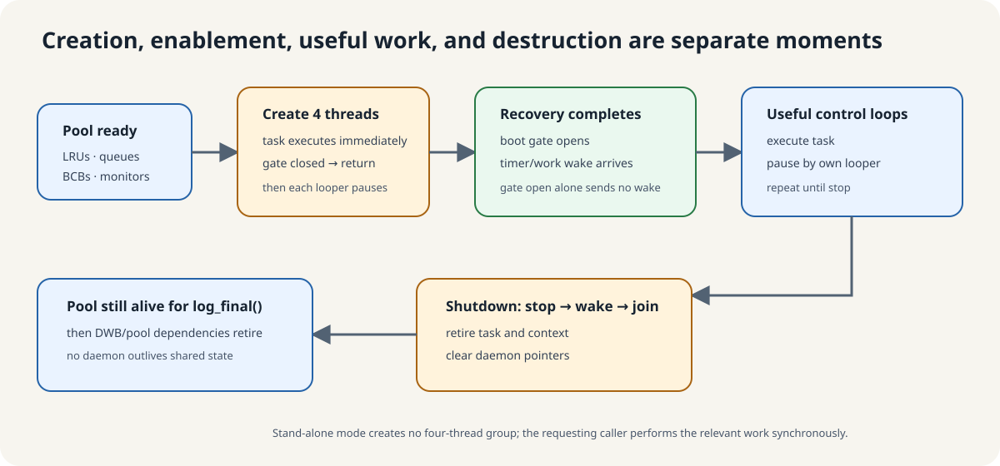
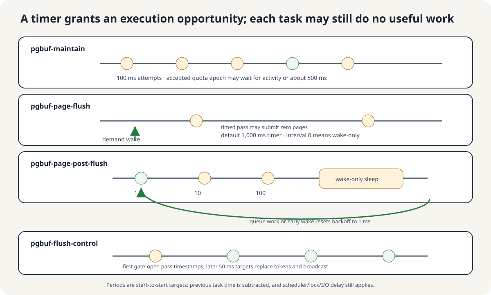

One daemon is one thread that executes one task and pauses
create_daemon() creates one managed execution context and one std::thread. Its loop is simple: execute the task, ask its cubthread::looper how long to pause, then execute again. The four names are therefore four independent control loops, rather than interchangeable workers pulling dirty pages from one queue.
The task runs once immediately after construction. A fixed period is a start-to-start target: the looper subtracts the previous execution time. A 100 ms period does not mean “finish work, then always sleep another 100 ms,” and it does not guarantee useful work on every pass.
Creation, enablement, useful work, and destruction happen separately

- The page-buffer pool, LRUs, queues, and monitors are initialized first.
- Server boot creates the four daemon threads before log recovery finishes.
- Their immediate task calls see the boot gate closed and return without useful page-buffer work.
- Boot opens the gate after recovery. Opening it does not itself wake every sleeper; a later timer or ordinary work wake lets each role observe the open gate.
- Normal shutdown sets each looper's stop flag, wakes a sleeper, joins the OS thread, retires its task/context, and clears the pointer.
log_final()and pool teardown happen after the page-buffer daemons have stopped, so no daemon outlives the shared state it touches.
Stand-alone mode creates none of these four threads. When background page-flush is unavailable, the relevant requester can perform victim flushing synchronously.
Each role has its own pause and admission rule

| Daemon | Plain job | Nominal pause | Explicit work wake | Page-image I/O? |
|---|---|---|---|---|
pgbuf-maintain | Recalculate replacement quotas/zones | 100 ms attempts | None | No |
pgbuf-page-flush | Create clean replacement supply from cold dirty pages | 1,000 ms default; zero is wake-only | Victim/allocation pressure | Yes |
pgbuf-page-post-flush | Finish BCB state and possibly wake an allocator | 1 → 10 → 100 ms, then wake-only | flushed_bcbs enqueue | No new write |
pgbuf-flush-control | Refresh post-write file-I/O pacing tokens | 50 ms target | None | No |
wakeup() only while it is sleeping. If the task is already running, the call is not stored for its next pause. Each task therefore rechecks shared pressure or queue state when it executes.Study the two cooperating pairs separately
flushed_bcbs handoff, protected BCB recheck, and allocator wake.Checkpoint, the log-flush daemon, foreground/WRITE-owner flushes, and DWB helper daemons are outside this four-role group. They can support or reuse the same durability machinery without becoming page-buffer daemon workers.
Explain one complete thread lifecycle and route four jobs
Prompt
Explain what happens from daemon construction during recovery through normal shutdown. Then name the role, cadence, and I/O responsibility of all four daemons.
Read the generic loop before each role
Start with pinned thread_daemon.cpp:208–245, thread_looper.cpp:118–224, and thread_waiter.cpp:76–224. Then read the four task bodies and initializers at page_buffer.c:16971–17228.